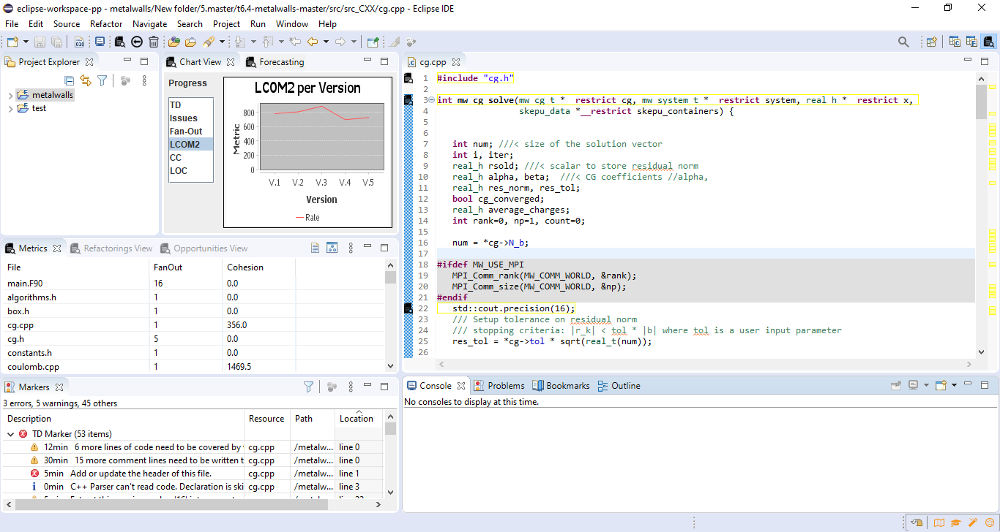

An Eclipse Perspective is called an initial collection and arrangement of views, tools, and editor area. As our plugin contains a lot of views and it’s a complete tool that an HPC developer should use, we also provide a specific perspective.
The user can access the provided perspectives from the menu “Window”, “Perspective” then “Open Perspective” and Finally selecting “Other..”. This will open a window like the next Figure, where the “TD Management” perspective should be.
If the user selects it the view and tools arrangement will change as is shown in the next Figure. In this way, the user will be able to have access to all the views and tools while continuing coding or refactoring his code.
Finally, all of the plugin views can be found from the menu “Window”, “Show View” and by selecting “Other…”. The views of our plugin are located in the “TD Management” folder.
